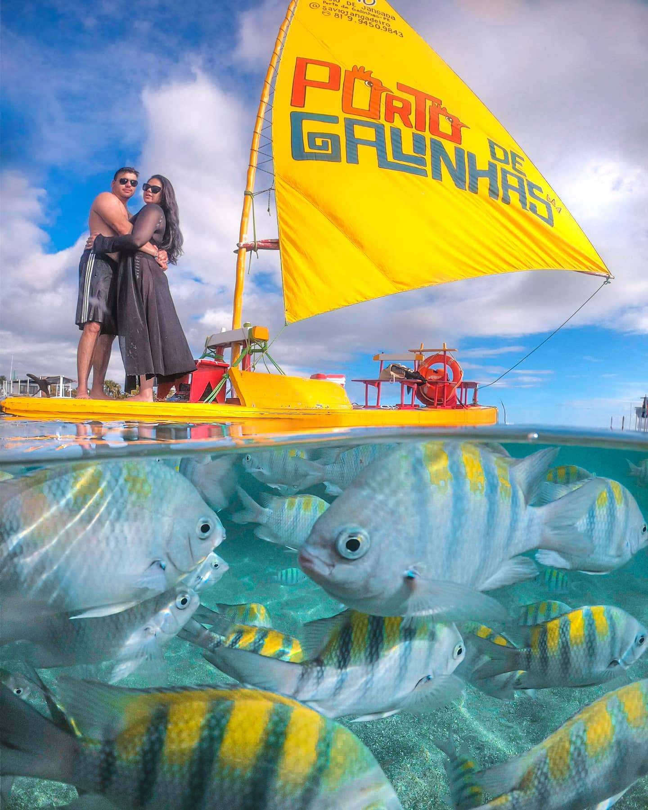
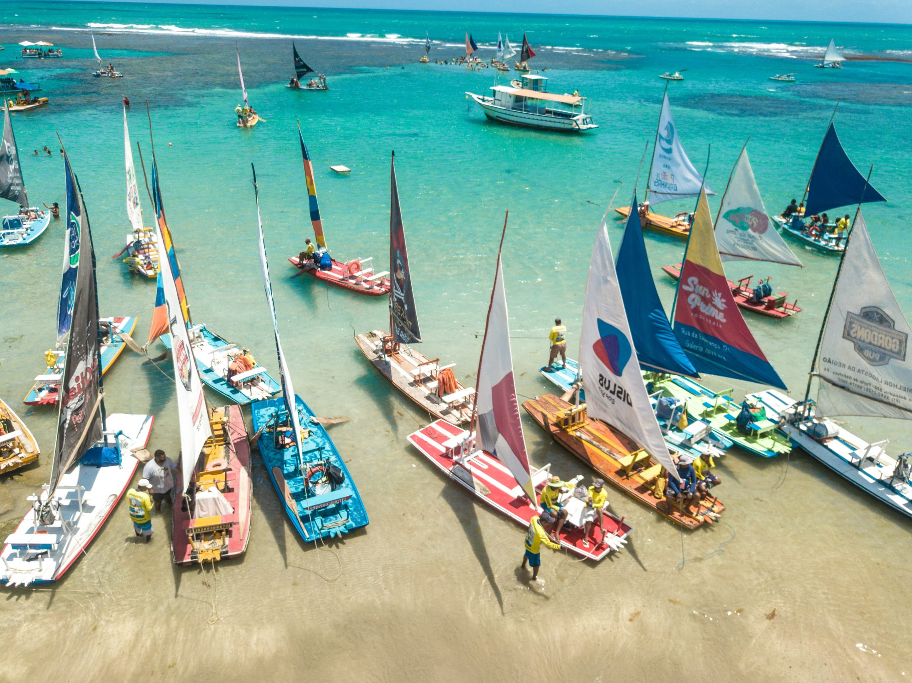

Porto de Galinhas está localizada no município de Ipojuca, a cerca de 60 km do Recife. É um dos destinos mais procurados do litoral nordestino, conhecido por suas águas cristalinas, piscinas naturais formadas por arrecifes e areias claras. A beleza natural aliada à excelente estrutura turística fazem da praia um verdadeiro paraíso tropical.
Além do banho de mar, os visitantes podem aproveitar passeios de jangada até as piscinas naturais, praticar mergulho para observar os peixes coloridos e relaxar em bares e restaurantes à beira-mar. A vila de Porto de Galinhas também encanta por seu clima acolhedor, lojinhas de artesanato e uma gastronomia rica e diversificada.


O nome "Porto de Galinhas" tem origem histórica e curiosa: durante o período colonial, com o tráfico de escravos proibido, os navios negreiros chegavam disfarçados trazendo “galinhas” no porão – um código usado para se referir aos escravizados. Quando eles desembarcavam, dizia-se que "tinham galinhas novas no porto".
Hoje, a praia é símbolo de beleza e alegria, e atrai turistas de todo o mundo. A preservação ambiental é uma prioridade na região, com várias iniciativas voltadas à sustentabilidade e ao turismo consciente.
Porto de Galinhas é ideal para famílias, casais e aventureiros que desejam contato direto com a natureza e experiências marcantes no litoral pernambucano.